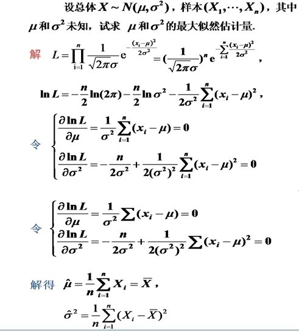
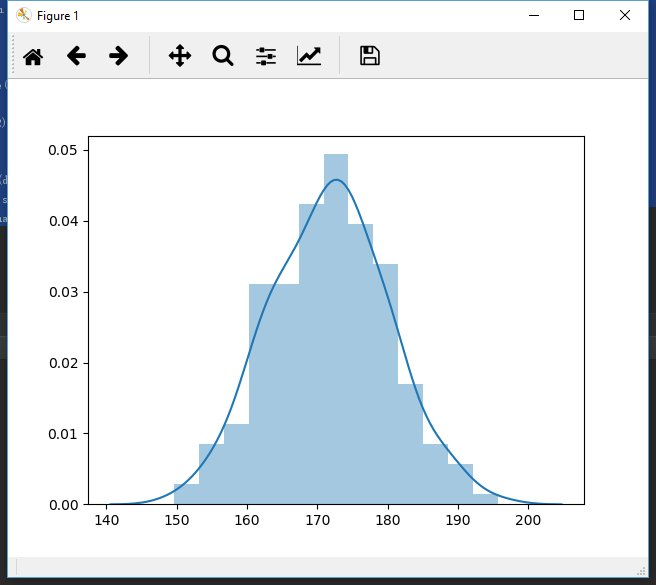
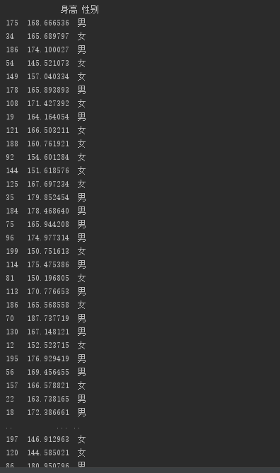
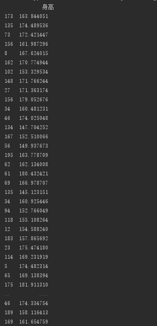
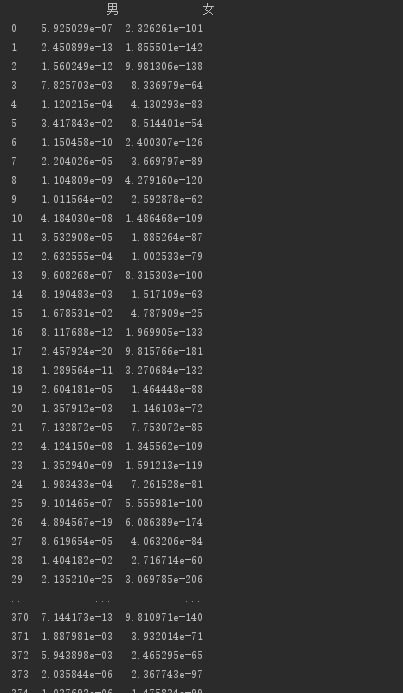
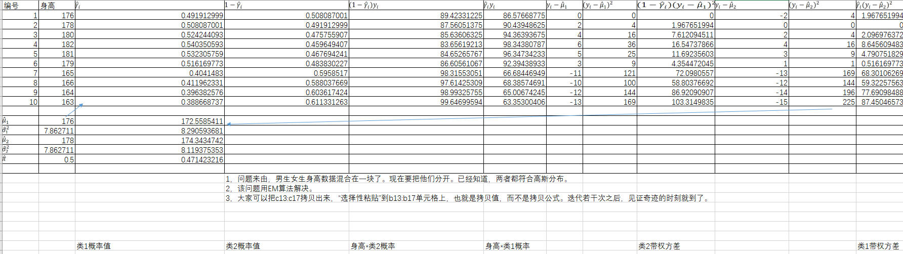
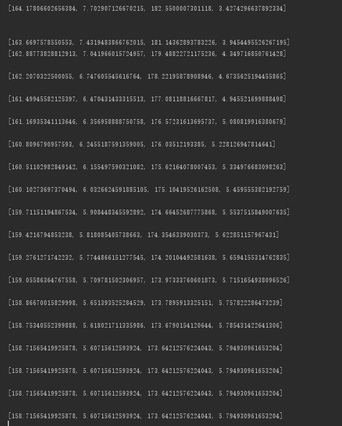

【统计学习】EM Algorithm(EM算法)
和贝叶斯方法一样，必须是知道了分布下，才能使用。其可以用来处理一类含有隐变量的问题。一般用于无监督分类。同时还有一些进化的算法。
对于已知分布，分布参数未知，且含有隐变量的问题(如200个人的男女生身高数据，分别为$M\sim N(\mu_1,\sigma^2)$和$F\sim N(\mu,\sigma^2)$(已知分布，参数未知),但只有身高数据,不知道哪个身高是男是女的。现在我们要对其进行分类。分出对于某个身高到底是男还是女的 这样的问题。这个问题中包含了隐变量Z={男、女})
解决此类问题的思想是，首先随机初始化分布的参数。然后由该参数下，似然估计出隐变量的分布(E步)。然后再由隐变量的分布似然估计出参数(M步)…..这样一直迭代。结果会一次比一次好(证明略)，会靠近真实值，但未必最终能取到真实值
Maximum Likelihood
为了解决这个问题我们先从简单的开始
现在有一个男生的身高样本集合（200个样本）$X\sim N(\mu,\sigma^2)$
参数未知。
那么我们可以用最大似然估计来估计参数。

分布图

import numpy as np
import seaborn as sns
import matplotlib.pyplot as plt
import pandas as pd
import math
def getdatas1():
d=np.random.normal(172,8,200)
return d
d1=getdatas1()
d2=pd.DataFrame(d1,columns=['身高'])
print(d2)
sns.distplot(d2)
plt.show()
#似然估计
hat_mu=np.mean(d2)
hat_sigma=math.sqrt(np.mean(np.power(d2-hat_mu,2)))
print([hat_mu,hat_sigma])
似然估计结果:
现在考虑复杂一些的情况。现在女生的身高数据也加了进来
服从另一个正态分布。
于是现在的情况是
现在数据集大概这样

现在讨论两个问题
1.根据数据集，如何估算出两个分布的参数
这个问题很好办。把相同性别的数据取出来，然后像上面一样进行似然估计就可以了
给定一个身高数据，如何其判断性别
知道两个分布的参数后，这个也很好办，只需要利用似然估计，判断属于哪一类的可能性更大就行
也就是判断$\frac{1}{\sqrt{2\pi}\sigma_1}exp\{\frac{(x_i-\mu_1)^2}{2\sigma_1^2}\}$和$\frac{1}{\sqrt{2\pi}\sigma_2}exp\{\frac{(x_i-\mu_2)^2}{2\sigma_2^2}\}$哪个更大。
EM Algorithm
现在把情况再弄复杂点。还是男女生的身高数据，还是服从两个分布且参数未知
不过现在数据集连性别标签也没有了。大概这样子

数据集除了一堆身高数据，没什么有用信息了。但是问题还是一样。根据数据集估计分布的参数，并且分类。
这要怎么办呢?
这是一个先有鸡还是先有蛋的问题。
如果我们知道分布参数，我们就可以得到性别的分布（或者说对数据进行性别的分类），但是要知道分布参数，又需要先知道性别的分布才能对参数进行似然估计
如果我们知道性别分布，我们就可以对参数进行估计，但是对参数进行估计，又先需要知道性别的分布…
现在多了一个隐变量:性别。
所以要怎么解决呢?
既然不知道分布的参数，那我们随机初始化吧~
现在我们随机假设一下参数
进行概率估计后

import numpy as np
import seaborn as sns
import matplotlib.pyplot as plt
import pandas as pd
import sklearn.utils as skr
import math
def getposibility(x,mu,sigma):
return (1/(math.sqrt(2*math.pi)*sigma))*math.pow(math.e,(-(x-mu)*(x-mu))/(2*sigma*sigma) )
def getdatas1():
d1=np.random.normal(172,8,200)
d2 = np.random.normal(160, 8, 200)
return d1,d2
'''
d1=getdatas1()
d2=pd.DataFrame(d1,columns=['身高'])
print(d2)
sns.distplot(d2)
plt.show()
#似然估计
hat_mu=np.mean(d2)
hat_sigma=math.sqrt(np.mean(np.power(d2-hat_mu,2)))
print([hat_mu,hat_sigma])
'''
M,F=getdatas1()
M2=pd.DataFrame(M,columns=["身高"])
#M2['性别']='男'
#print(M2)
F2=pd.DataFrame(F,columns=["身高"])
#F2['性别']='女'
d=pd.concat([M2,F2],axis=0)
#data=skr.shuffle(d)
print(d)
#EM
curmu1=140
curmu2=200
cursigma1=5
cursigma2=3
for k in range(100):
gl_m = []
gl_f = []
m_r_sg=[]
f_r_sg=[]
for x in d['身高']:
lm=getposibility(x, curmu1, cursigma1)
fm=getposibility(x, curmu2, cursigma2)
m_multiple_sg=lm*x
f_multiple_sg=fm*x
gl_m.append(lm/(lm+fm))
gl_f.append(fm/(fm+lm))
m_r_sg.append(m_multiple_sg)
f_r_sg.append(f_multiple_sg)
# lsd=pd.DataFrame({'男':{},'女':{}})
d['男'] = gl_m
d['女'] = gl_f
d['M_m_p']=m_r_sg
d['F_m_p']=f_r_sg
print(d)
lsm1 = np.mean(d[(d['男'] > d['女'])]['身高'])
sig1 = np.sqrt(np.mean(np.power((d[(d['男'] > d['女'])]['身高'] - lsm1), 2)))
ksm2 = np.mean(d[(d['男'] < d['女'])]['身高'])
sig2 = np.sqrt(np.mean(np.power((d[(d['男'] < d['女'])]['身高'] - ksm2), 2)))
# lsm1 = np.mean(d[(d['男'] > d['女'])]['身高'])
'''
lsm1=np.mean(d['M_m_p'])/np.mean(d['男'])
ksm2=np.mean(d['F_m_p'])/np.mean(d['女'])
eff_fcMs=[]
for x in d:
eff_fc_M=(d['身高']-lsm1)*(d['身高']-lsm1)*d['M_m_p']
eff_fcMs.append(eff_fc_M)
print(eff_fcMs)
d['eff_fcMs']=eff_fcMs
print(d)
sig1 = np.sqrt(np.sum( d.apply(lambda x:x['M_m_p']* np.power(x['身高'] - lsm1, 2) ) ,axis=1 ))
sig2= np.sqrt(np.multiply(d['F_m_p'], np.power((d['身高'] - ksm2, 2))))
'''
if (np.count_nonzero(d[(d['男'] < d['女'])]['身高']) == 0):
ksm2 = 0
sig2 = 0
print([lsm1, sig1, ksm2, sig2])
curmu1 = lsm1
curmu2 = ksm2
cursigma1 = sig1
cursigma2 = sig2
input()


经过迭代，可以发现离真实值很近了
上面用的是普通版本的EM（也就是根据概率分类后再似然估计参数）
在实际一般用优化版的EM，也就是把每个数据都用上。观测值乘概率加权求和后再除于概率和.均值与方差都这么做